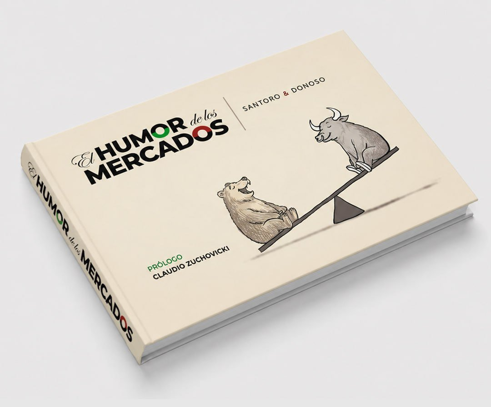
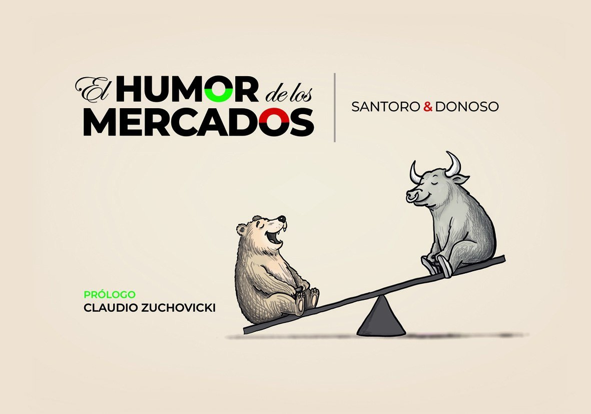

SANTORO & DONOSO PRESENTAN
El humor de los mercados.
El mundo de las finanzas, visto desde el humor gráfico de Demián Aiello.
Conseguí el libro
Una mirada ilustrada sobre toros, osos y las cosas que pasan cuando se habla de plata.
DEMIÁN AIELLO✳SANTORO & DONOSO✳EL HUMOR DE LOS MERCADOS
UN UNIVERSO DE VIÑETAS

Las finanzas también
tienen su lado cómico.
El lenguaje de los mercados se convierte en materia prima para el humor. Santoro & Donoso llevan a la viñeta los códigos bursátiles y las situaciones que rodean al dinero y las inversiones.
En sus nombres se esconden el toro y el oso: los símbolos de las subas y las bajas. Dos personajes para mirar un mundo que cambia de humor todo el tiempo.
Trazo humanoIlustraciones dibujadas íntegramente a mano.
PrólogoClaudio Zuchovicki, divulgador financiero.
EL LIBRO EN LOS MEDIOS
La prensa lo cuenta.
Forbes ARGENTINA18 SEP 2026
¿Cae un tabú? El primer libro que lleva el humor gráfico al mundo de los mercados
Leer la nota ↗Bloomberg Línea19 SEP 2026
Un ilustrador argentino lleva el humor financiero al papel con un libro sobre los mercados
Leer la nota ↗EL HUMOR, EN PAPEL
Sumalo a tu biblioteca.
Conseguí El humor de los mercados, de Santoro & Donoso.
Ver en Mercado Libre